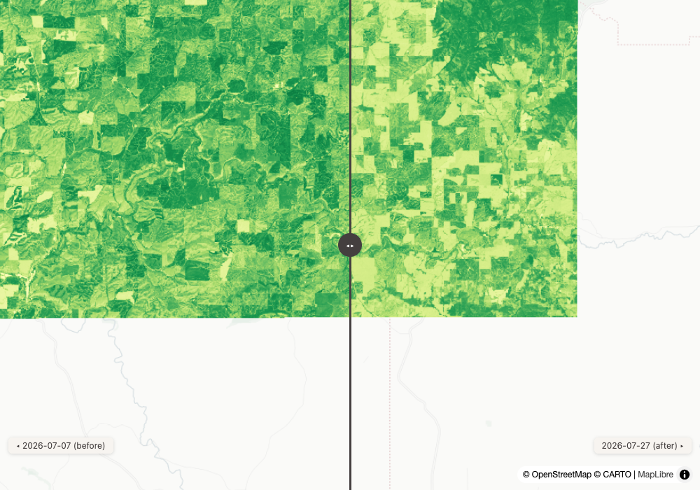
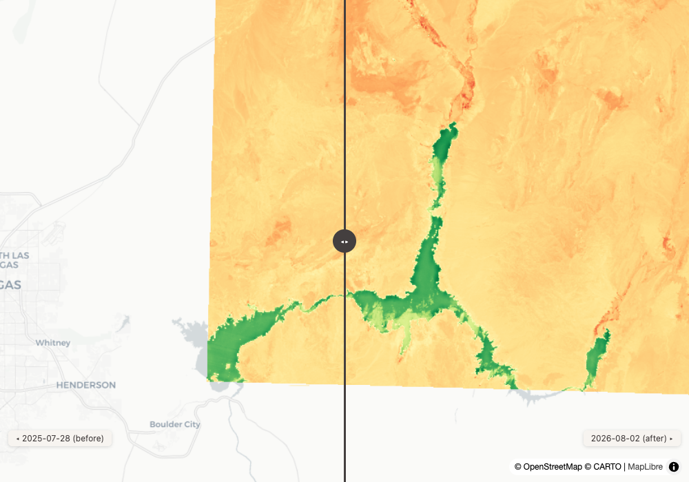
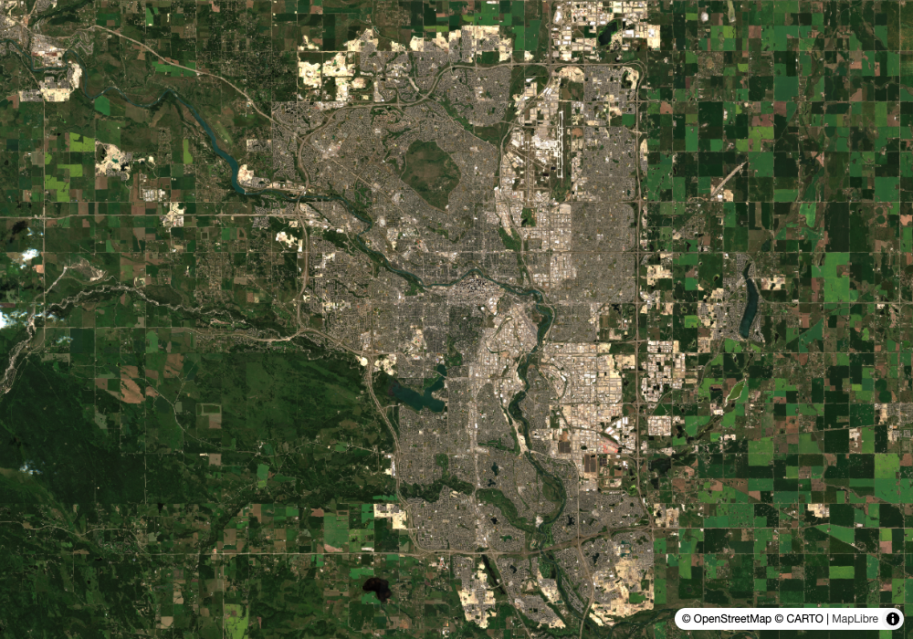
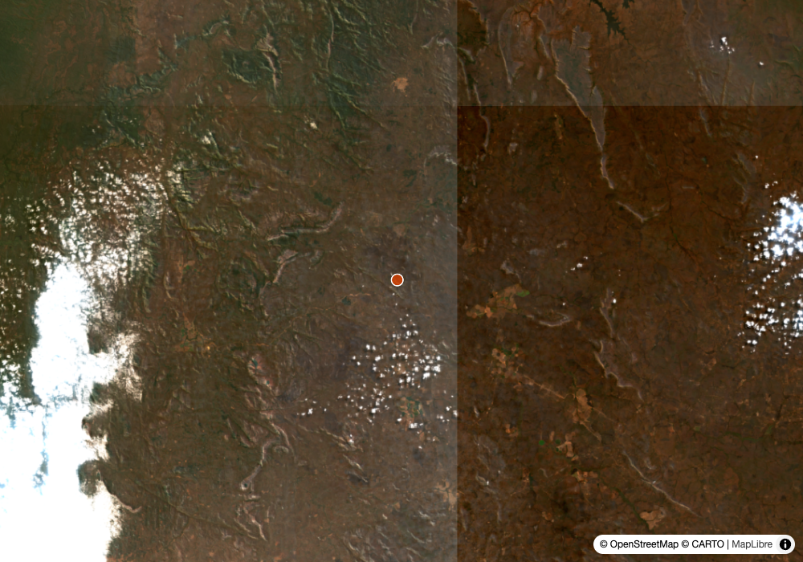
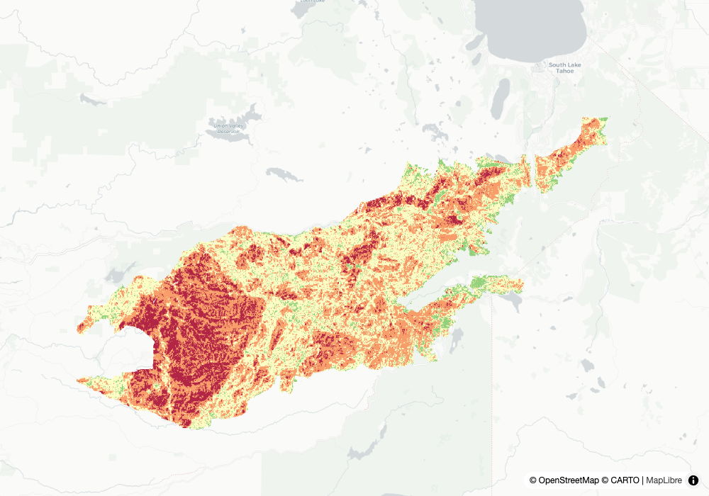
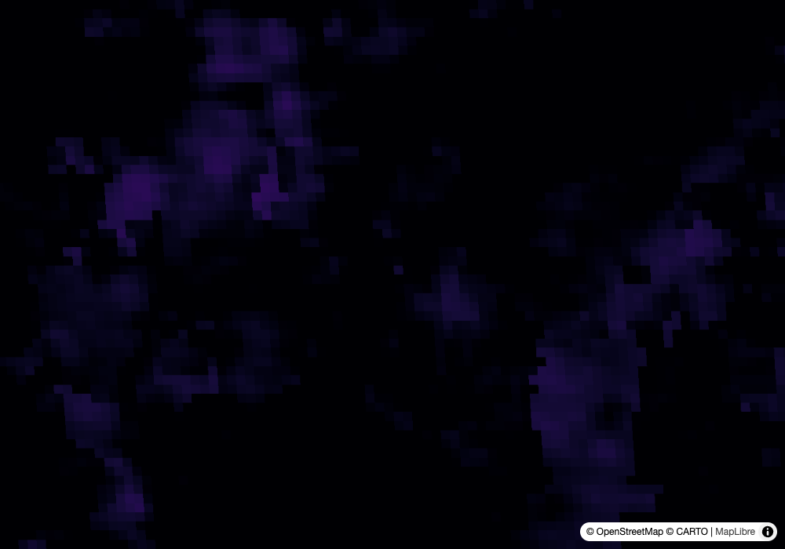
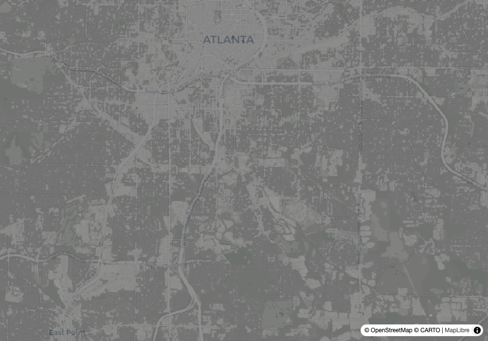
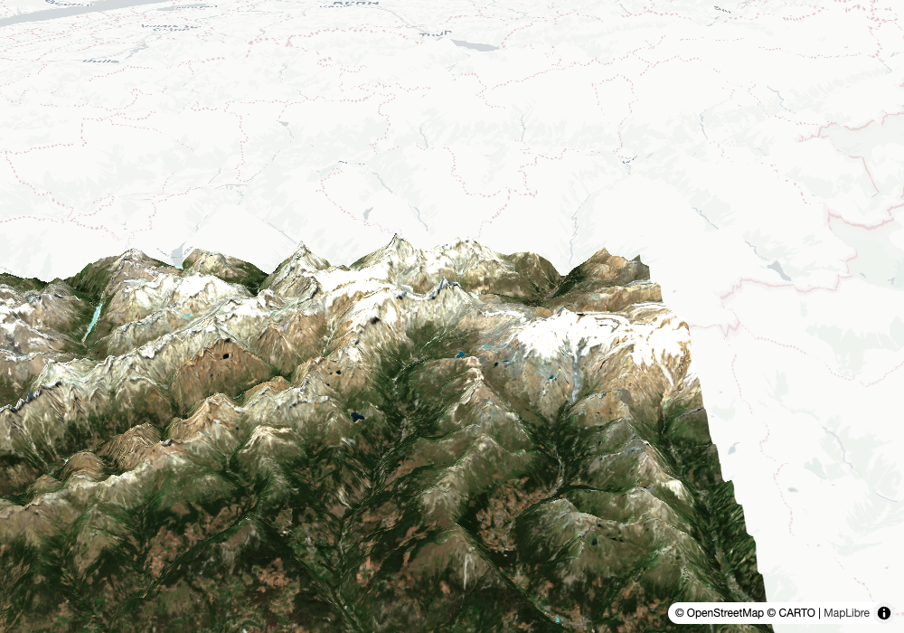

Round 1 — what changed
1
compare_dates
agriculture
Input
How is the Palouse harvest going? Compare early July to now.
Output
One call. Same tile (11TMN), same satellite (S2B), July 7 vs July 27, both under 0.02% cloud — a clean pair. NDVI fell from 0.419 to 0.319, −23.8% in three weeks. That is the wheat coming off the hills, measured. The swipe map shows the green draining out of the Palouse field by field.
swipe map ↗Learning → The tool's matched-tile discipline is the point: same MGRS tile, same satellite, comparable geometry, so the delta means what it claims to mean.
compare_dates — first field test: matched-tile scene pairing, index delta, swipe map in one call
2
compare_dates
water security
Input
Is Lake Mead's surface water noticeably different from a year ago?
Output
No — and the tool says so with a straight face. NDWI over the same tile, July 28 2025 vs August 2 2026, both under 0.01% cloud: −2.1%, within seasonal noise. A year of headlines, no measurable surface-area story in this pair. The honest null result is the answer a client can actually use.
swipe map ↗Learning → A change tool that can say "nothing changed" is worth more than one that always finds a story.
compare_dates with a custom NDWI expression, year-over-year windows
3
next_pass
wildfire response
Input
When can we next get imagery of the MITRE ROCK fire in Stevens County?
Output
Radar tomorrow, optical Thursday. Sentinel-1C passes Aug 5 at 14:20 UTC (sees through smoke), Sentinel-2B Thursday Aug 6 at 19:00 UTC — daylight, weather permitting. Live TLEs from Celestrak, swath geometry, honest caveat attached: a pass is a possible capture, not a promise, and imagery lands in catalogs hours later. Validation baked in: the tool predicts Sentinel-2 over the Chelan area at 19:11 UTC — the exact acquisition slot stamped on every real Chelan scene in the archive.Learning → "When can we look again" is the question disaster responders actually ask, and the prediction agreeing with the archive's real acquisition times is the check that it's not making orbits up.
next_pass — first field test: Skyfield + live Celestrak TLEs, pattern from developmentseed/eo-predictor
Round 2 — the mosaic grows up, and the stack tells the truth
4
coverage_set
the regression case
Input
Show me Calgary. All of it. One parameter this time.
Output
The two-tile answer is now one layer entry: pass search_imagery's full_coverage_set straight through as {"type": "coverage_set"} and it expands to a named layer per scene — no hand-unrolling, no dropped tiles, auto-overlay instead of a swipe. The render reports no coverage_note, which is the machine agreeing the city is whole.
live map ↗Learning → Field test №4 shipped a 58%-coverage map because a human unrolled a coverage set by hand and dropped scenes. The fix wasn't a warning — it was making the right thing the easy thing. The warning stayed too.
the new coverage_set layer type, auto-mosaic ergonomics
5
same-day imagery
fire monitoring
Input
GDACS lists active forest fires in Angola. What does the newest imagery show?
Output
The newest imagery is from this morning — Sentinel-2 acquired at 09:23 UTC today, four tiles mosaicked to 100% coverage via one coverage_set entry, with the GDACS fire zone marked. Southern-hemisphere dry season, burn scars and smoke visible in true colour, hours old.
live map ↗Learning → The satellite-to-shareable-map latency here is measured in hours, and no key or account was involved at any step.
coverage_set + active_events on one map, acquisition-to-artifact same day
6
eoAPI on the panel
the attribution case
Input
Show me Caldor fire burn severity from NASA VEDA, and show me what's serving it.
Output
The burn severity layer renders as before — but the Stack panel now carries a new row: eoAPI, DevSeed-created, serving VEDA's catalog and raster APIs. Verified this afternoon against openveda.cloud's own API landing page (stac-fastapi). Every VEDA layer in every previous field test was served by eoAPI too; the panel just never said so. Now the filled DevSeed badge sits on the serving layer behind a data row, not only on the tiler.
live map ↗Learning → The best attribution fix of the day cost zero deployments: the DevSeed-built instance was already in production at NASA, unclaimed.
stack_layer with the new eoAPI attribution — joined only when VEDA pixels are on screen
7
band scaling
heat risk / Europe
Input
How hot is the ground in Seville right now — in actual degrees?
Output
MODIS 8-day surface temperature, clipped to the city: mean 34.5°C ground temperature — and the conversion is no longer folklore. The stats response now carries band_scaling read from STAC's raster:bands (scale 0.02, unit Kelvin), so raw DN 15382 becomes 34.5°C by the catalog's own declaration, not a magic number someone remembered. Unclipped, the response warns the tile spans 13° × 10°.
live map ↗Learning → The scale factor was always in the catalog. Passing it through is the difference between a number and an answer.
compute_statistics with aoi clip, band_scaling passthrough, extent_note guard
Round 3 — partner-shaped, and one honest bug
8
public space
Trust for Public Land-shaped
Input
For south Atlanta, can a project manager benchmark public green space access within a geography?
Output
The raw material, on one map: 60cm NAIP aerial photography with ESA WorldCover land classes as a toggle — tree cover, grassland, built-up, at 10m, over imagery sharp enough to see individual ball fields. This is the shape of a real inbound (an org that wants exactly this benchmarked for any US community), and the honest framing is that this map is the start of that conversation, not the product: the product needs park boundaries, population, and access analysis built on top.
live map ↗Learning → A sandbox answer that names what it is NOT (the access analysis) sells the build better than overclaiming would.
NAIP + WorldCover toggle on planetary-computer, the demo-to-scoping-conversation move
9
3d + geocode guard
the roadshow
Input
The Matterhorn in 3D.
Output
Nominatim returned the Matterhorn as a point — a bbox 0.0001° wide, which last month would have made an empty 3D scene. The geocoder now widens it to a 0.3° box and says so in bbox_note. On that box: a 0.0007%-cloud July 24 scene draped at 1.6× exaggeration, orbit and slider live.
live 3D ↗Learning → Peaks and landmarks are OSM nodes, not areas. The guard turns a silent empty scene into a stated assumption the caller can override.
the degenerate-bbox guard from field test №4, render_map_3d
10
honest bug
polar / antimeridian
Input
Iceberg B22A sits near the Ross Sea. What does the archive actually have over it?
Output
Plenty — and a bug. Sentinel-1 images the area daily in extra-wide polar mode (HH/HV, radar, so polar night is no obstacle; optical is dead there until spring). But every result reports covers_aoi_pct: 0, which is false: the scene footprints cross the antimeridian, their bboxes wrap west-greater-than-east, and the coverage math reads that as a degenerate box. The scenes cover the iceberg; the number says they don't.Learning → Filed: covers_aoi_pct (and full_coverage_set, which builds on it) is wrong for antimeridian-crossing scenes. A field test that only shows the wins isn't a test.
orbit_state on results, EW-mode HH/HV assets, and a found limitation filed as a finding
11
next_pass + radar
the pairing
Input
So when will Sentinel-1 next sweep the B22A area?
Output
The two tools answer together: the archive shows ascending EW passes on Aug 1, 2, and 3 — near-daily radar coverage — and next_pass projects the cadence forward from live TLEs. For a drifting iceberg in polar winter this is the whole monitoring story: radar, day or night, cloud irrelevant, roughly a pass a day, imagery in the catalog hours behind the satellite.Learning → "What's there" and "when's the next look" are one question to a responder. The tools now answer it as one.
orbit_state + next_pass composing into a monitoring answer
Reproduce
git clone https://github.com/dannybauman/groundstation && cd groundstation
bash scripts/doctor.sh # walks the setup chain, prints the fix
uv run evals/unit_checks.py # offline checks
uv run evals/run_evals.py # live checks against real endpoints
uv run scripts/field_test.py docs/field-test-2026-08-05.cases.json # rebuild this page